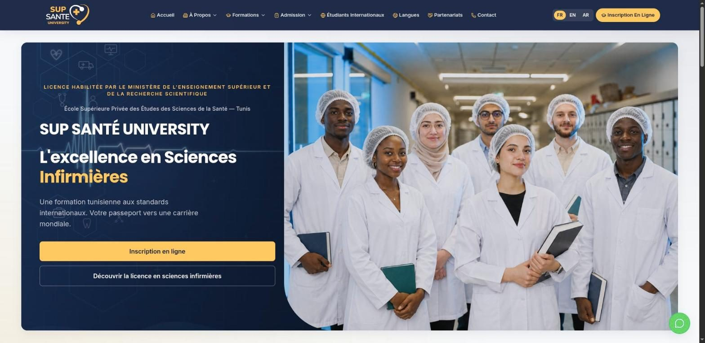

Le site et la plateforme d'admission d'une école privée de sciences infirmières : deux sites publics en français, anglais et arabe, une pré-inscription en ligne, un espace étudiant et un back-office d'admission.
3langues, dont l'arabe de droite à gauche
2sites publics : université et formation continue
5modules d'administration aux accès distincts
12modèles d'e-mails aux couleurs de l'école
En bref
SupSanté est la plateforme web d'une école supérieure privée de sciences infirmières. Au départ simple site vitrine statique, elle est devenue une application complète qui couvre tout le cycle d'admission, de la première visite à la décision finale.
Une page d'entrée mène à deux sites publics : le site University pour la licence en sciences infirmières et l'Executive Education Center pour la formation continue des professionnels de santé. Les futurs étudiants se pré-inscrivent en ligne et déposent leurs documents, suivent leur dossier depuis un espace étudiant personnel, et l'équipe d'admission traite chaque dossier dans un back-office jusqu'à son acceptation ou son refus.
Tout le contenu public est disponible en français, anglais et arabe, la version arabe étant mise en page de droite à gauche, formulaires compris. Le site, l'espace étudiant et le back-office s'utilisent aussi sur mobile.
Pour qui
Futurs étudiants
Découvrent l'école et ses formations dans leur langue, consultent les conditions d'admission et les bourses, et se pré-inscrivent en ligne.
Candidats et étudiants
Déposent les pièces demandées, suivent l'état de leur dossier et, une fois acceptés, consultent leur programme d'études.
Équipe d'admission
Examine les dossiers pièce par pièce, réclame les documents manquants, enregistre les décisions et prévient les candidats par e-mail.
Direction de l'école
Gère les comptes administrateurs et leurs accès, active ou désactive les sites publics, et suit les visites et les pré-inscriptions.
Le problème résolu
Un simple site vitrine
Le site d'origine présentait l'école mais ne permettait pas de candidater. La pré-inscription et les pièces justificatives sont désormais recueillies en ligne, rattachées au dossier de chaque candidat.
De la visibilité pour le candidat
Un candidat a besoin de savoir où en est son dossier. L'espace étudiant affiche à tout moment son statut et l'état de chaque document.
Un examen structuré
Chaque dossier suit les mêmes étapes, de la vérification des pièces à une décision enregistrée, avec le bon e-mail envoyé au candidat à chaque étape.
Une vision sur le site
Les statistiques de visites et de formulaires sont intégrées au back-office : l'école voit comment les visiteurs deviennent candidats.
Fonctionnalités principales
Deux sites publics
Un site University et un site Executive Education à l'identité propre, accessibles depuis une page d'entrée commune ; chacun peut être activé ou désactivé depuis le back-office.
Trois langues
Français, anglais et arabe sur toutes les pages publiques, avec une mise en page entièrement inversée en arabe.
Pré-inscription en ligne
Un formulaire guidé (identité, coordonnées, baccalauréat, formation choisie) avec dépôt de documents ; un compte est créé à partir du dossier.
Espace étudiant
Compte confirmé par un code reçu par e-mail, réinitialisation du mot de passe, profil, dépôt des pièces et suivi du statut du dossier.
Programme d'études
Une fois le dossier accepté, l'étudiant débloque son programme : 6 semestres et 180 crédits, avec les modules de chaque semestre.
Back-office d'admission
Liste des dossiers filtrable, examen de chaque document, alertes de pièce manquante, acceptation ou refus avec motif obligatoire, archivage et export Excel.
Inscriptions en formation continue
Les fiches de l'Executive Education Center sont traitées de la même façon, de la liste jusqu'à l'e-mail de décision.
Administrateurs et accès
Les administrateurs sont invités par e-mail et ne voient que les modules qui leur sont attribués ; la suppression d'un administrateur exige la validation d'une seconde personne, et chaque action est journalisée.
Statistiques intégrées
Visites, provenance du trafic, pages les plus vues, remplissage des formulaires et taux de conversion en pré-inscription, filtrables par période et par formation, exportables en Excel.
Page légale modifiable
La politique de confidentialité est rédigée dans un éditeur de texte riche du back-office et publiée sur les deux sites.
Comment ça marche
Découvrir l'école
Le visiteur parcourt le site University ou Executive Education en français, anglais ou arabe : formations, admission, bourses.
Se pré-inscrire
Il remplit le formulaire de pré-inscription ; un compte étudiant est créé et confirmé par un code envoyé par e-mail.
Déposer les documents
Dans son espace, il voit les pièces exigées pour sa formation, les dépose et soumet son dossier, qui se verrouille pour l'examen.
Examen par l'école
Un administrateur vérifie chaque document, le valide ou le rejette, et envoie une alerte si une pièce manque.
Décision
Le dossier est accepté, ou refusé avec un motif ; le candidat reçoit un e-mail dans les deux cas et le dossier peut être archivé.
Début des études
Une fois accepté, l'étudiant voit son programme se débloquer dans son espace, semestre par semestre.
Technologies
Interface
Next.js et ReactServent les sites publics, l'espace étudiant et le back-office depuis une seule application web.
Tailwind CSSMet en forme les pages, y compris la mise en page inversée de droite à gauche pour l'arabe.
next-intlGère les versions française, anglaise et arabe de chaque page.
React Hook Form et ZodAniment les formulaires et contrôlent les saisies avant leur envoi.
TipTapÉditeur de texte riche utilisé pour rédiger la politique de confidentialité.
Serveur et API
Node.js avec ExpressFournit l'API utilisée par les sites, l'espace étudiant et le back-office.
TypeScriptUtilisé côté interface comme côté serveur pour un code cohérent et vérifié.
MulterRéceptionne les documents déposés par les candidats (PDF et images).
Données
MySQLStocke les comptes, dossiers, documents, programmes, journaux d'administration et statistiques de visite.
SequelizeFait le lien entre les données de l'application et la base.
E-mails et exports
NodemailerEnvoie les e-mails aux couleurs de l'école : codes de vérification, accusés de réception, alertes et décisions.
ExcelJSProduit les exports Excel des dossiers et des statistiques.
Sécurité
Jetons JWT en cookiesMaintiennent la connexion des étudiants et des administrateurs, avec des droits vérifiés à chaque requête.
bcryptProtège les mots de passe enregistrés.
Helmet et limitation de débitAjoutent les protections web courantes et limitent les requêtes répétées.
Aperçu

Accueil du site University, avec choix de la langue et inscription en ligne.Espace étudiant : pièces déposées, en attente de vérification.Back-office : validation de chaque document avant la décision.Statistiques intégrées : visites et indicateurs de pré-inscription.
Ce que ça apporte
Un seul parcours d'admission
De la première visite à la décision, chaque étape se déroule sur la même plateforme, avec un statut clair pour chaque dossier.
De la clarté pour les candidats
Le candidat sait quelles pièces sont attendues, ce qui manque et où en est son dossier, dans sa propre langue.
Moins de travail manuel
L'examen des pièces, les relances et les e-mails de décision se font en quelques clics au lieu de messages séparés.
Une administration encadrée
Accès par module, suppression d'un administrateur à deux personnes et journal des actions rendent le back-office traçable.
Des données propres à l'école
Les statistiques de visite et de conversion sont collectées par la plateforme elle-même, sans outil d'analyse externe.